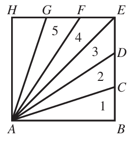

Mensuration
Welcome to Our Site
I greet you this day,
For the Classic ACT exam:
The ACT Mathematics test is a timed exam...60 questions in 60 minutes
This implies that you have to solve each question in one minute.
Each of the first 20 questions (less challenging) will typically take less than a minute a solve.
Each of the next 20 questions (medium challenging) may take about a minute to solve.
Each of the last 20 questions (more challenging) may take more than a minute to solve.
The goal is to maximize your time.
You use the time saved on the questions you solve in less than a minute to solve questions that will take more
than a minute.
So, you should try to solve each question correctly and timely.
So, it is not just solving a question correctly, but solving it correctly on time.
Please ensure you attempt all ACT questions.
There is no negative penalty for a wrong answer.
Also: please note that unless specified otherwise, geometric figures are drawn to scale. So, you can figure out
the correct answer by eliminating the incorrect options.
Other suggestions are listed in the solutions/explanations as applicable.
These are the solutions to the ACT past questions on the topics in Mensuration.
When applicable, the TI-84 Plus CE calculator (also applicable to TI-84 Plus calculator) solutions are provided
for some questions.
The link to the video solutions will be provided for you. Please
subscribe to the YouTube channel to be notified of upcoming livestreams. You are welcome to ask questions during
the video livestreams.
If you find these resources valuable and if any of these resources were helpful in your passing the
Mathematics test of the ACT, please consider making a donation:
Cash App: $ExamsSuccess or
cash.app/ExamsSuccess
PayPal: @ExamsSuccess or
PayPal.me/ExamsSuccess
Your donation is appreciated.
Comments, ideas, areas of improvement, questions, and constructive
criticisms are welcome.
Feel free to contact me. Please be positive in your message.
I wish you the best.
Thank you.
Formulas
Right Triangle
$ perpendicular\:\:height = height \\[3ex] Area = \dfrac{1}{2} * base * height \\[5ex] height = \dfrac{2 * Area}{base} \\[5ex] base = \dfrac{2 * Area}{height} \\[5ex] hypotenuse^2 = height^2 + base^2...Pythagorean\:\:Theorem \\[3ex] hypotenuse = \sqrt{height^2 + base^2} \\[3ex] height = \sqrt{hypotenuse^2 - base^2} \\[3ex] base = \sqrt{hypotenuse^2 - height^2} \\[3ex] Perimeter = hypotenuse + height + base \\[3ex] Area = \dfrac{1}{2} * height * base * \sin (hypotenuseAngle) \\[5ex] Area = \dfrac{1}{2} * height * hypotenuse * \sin (baseAngle) \\[5ex] Area = \dfrac{1}{2} * base * hypotenuse * \sin (heightAngle) \\[5ex] Semiperimeter = \dfrac{height + base + hypotenuse}{2} \\[5ex] Semiperimeter - height = firstdifference \\[3ex] Semiperimeter - base = seconddifference \\[3ex] Semiperimeter - hypotenuse = thirddifference \\[3ex] Area = \sqrt{Semiperimeter * firstdifference * seconddifference * thirddifference}...Hero's\:\:Formula\:\:or\:\:Heron's\:\:Formula \\[5ex] hypotenuse = {Perimeter^2 - 4 * Area}{2 * Perimeter} \\[5ex] base = \dfrac{(Perimeter - hypotenuse) \pm Math.sqrt((hypotenuse - Perimeter)^2 - 8 * Area)}{2} \\[5ex] height = \dfrac{2 * Area}{base} $
Triangle
$ Perimeter = firstside + secondside + thirdside \\[5ex] Area = \dfrac{1}{2} * firstside * secondside * \sin (thirdAngle) \\[5ex] Area = \dfrac{1}{2} * firstside * thirdside * \sin (secondAngle) \\[5ex] Area = \dfrac{1}{2} * secondside * thirdside * \sin (firstAngle) \\[5ex] Semiperimeter = \dfrac{firstside + secondside + thirdside}{2} \\[5ex] Semiperimeter - firstside = firstdifference \\[3ex] Semiperimeter - secondside = seconddifference \\[3ex] Semiperimeter - thirdside = thirddifference \\[3ex] Area = \sqrt{Semiperimeter * firstdifference * seconddifference * thirddifference}...Hero's\:\:Formula\:\:or\:\:Heron's\:\:Formula \\[5ex] \underline{Cosine\:\:Law} \\[3ex] firstside^2 = secondside^2 + thirdside^2 - 2 * secondside * thirdside * \cos (firstAngle) \\[3ex] secondside^2 = firstside^2 + thirdside^2 - 2 * firstside * thirdside * \cos (secondAngle) \\[3ex] thirdside^2 = firstside^2 + secondside^2 - 2 * firstside * secondside * \cos (thirdAngle) \\[5ex] firstAngle = \cos^{-1} \left(\dfrac{secondside^2 + thirdside^2 - firstside^2}{2 * secondside * thirdside}\right) \\[5ex] secondAngle = \cos^{-1} \left(\dfrac{firstside^2 + thirdside^2 - secondside^2}{2 * firstside * thirdside}\right) \\[5ex] thirdAngle = \cos^{-1} \left(\dfrac{firstside^2 + secondside^2 - thirdside^2}{2 * firstside * secondside}\right) \\[7ex] \underline{\text{Area of a Triangle given the vertices}} \\[3ex] \text{Let the vertices be:} \\[3ex] Vertex\;1:\;\;(x_1, y_1) \\[4ex] Vertex\;2:\;\;(x_2, y_2) \\[4ex] Vertex\;3:\;\;(x_3, y_3) \\[4ex] Area = \dfrac{1}{2}|x_1(y_2 - y_3) + x_2(y_3 - y_1) + x_3(y_1 - y_2)| $
Insribed Triangle (Circumscribed Circle)
$ Circumradius = \dfrac{firstside \cdot secondside \cdot thirdside}{4 \cdot Area} $
Square
$ side = length = width = height \\[3ex] Area = side^2 \\[3ex] side = \sqrt{Area} \\[3ex] Perimeter = 4 * side \\[3ex] side = \dfrac{Perimeter}{4} \\[5ex] diagonal = side * \sqrt{2} \\[3ex] side = \dfrac{diagonal * \sqrt{2}}{2} \\[5ex] Area = \dfrac{Perimeter^2}{16} \\[5ex] Perimeter = 4 * \sqrt{Area} \\[3ex] Area = \dfrac{diagonal^2}{2} \\[5ex] diagonal = \sqrt{2 * Area} \\[3ex] Perimeter = 2 * diagonal * \sqrt{2} \\[3ex] diagonal = \dfrac{Perimeter * \sqrt{2}}{4} $
Rectangle
$ Area = length * width \\[3ex] length = \dfrac{Area}{width} \\[5ex] width = \dfrac{Area}{length} \\[5ex] Area = \dfrac{(length * Perimeter) - (2 * length^2)}{2} \\[5ex] Area = \dfrac{(width * Perimeter) - (2 * width^2)}{2} \\[5ex] Perimeter = 2(length + width) \\[3ex] length = \dfrac{Perimeter - 2 * width}{2} \\[5ex] width = \dfrac{Perimeter - 2 * length}{2} \\[5ex] Perimeter = \dfrac{2(length^2 + Area)}{length} \\[5ex] Perimeter = \dfrac{2(width^2 + Area)}{width} \\[5ex] diagonal = \sqrt{length^2 + width^2} \\[4ex] length = \sqrt{diagonal^2 - width^2} \\[4ex] width = \sqrt{diagonal^2 - length^2} \\[4ex] diagonal = \dfrac{\sqrt{length^4 + Area^2}}{length} \\[5ex] diagonal = \dfrac{\sqrt{width^4 + Area^2}}{width} \\[5ex] diagonal = \dfrac{\sqrt{(Perimeter^2) + (5 * length^2) - (4 * Perimeter * length)}}{2} \\[5ex] diagonal = \dfrac{\sqrt{(Perimeter^2) + (5 * width^2) - (4 * Perimeter * width)}}{2} $
Circle
$ Area = A \\[3ex] Circumference = C \\[3ex] Radius = r \\[3ex] Diameter = d \\[3ex] d = 2r \\[3ex] r = \dfrac{d}{2} \\[5ex] A = \pi r^2 \\[3ex] A = \dfrac{\pi d^2}{4} \\[5ex] C = 2\pi r \\[3ex] C = \pi d \\[3ex] r = \dfrac{\sqrt{A\pi}}{\pi} \\[5ex] r = \dfrac{C}{2\pi} \\[5ex] d = \dfrac{2\sqrt{A\pi}}{\pi} \\[5ex] r = \dfrac{C}{\pi} \\[5ex] A = \dfrac{C^2}{4\pi} \\[5ex] C = 2\sqrt{A\pi} $
Cube
6 square faces
12 edges
$
edge = side = length = width = height \\[3ex]
Surface\:\:Area = 6 * edge^2 \\[3ex]
edge = \sqrt{\dfrac{Surface\:\:Area}{6}} \\[5ex]
Volume = edge^3 \\[3ex]
edge = \sqrt[3]{Volume} \\[3ex]
Volume = \dfrac{edge * Surface\:\: Area}{6} \\[5ex]
edge = \dfrac{6 * Volume}{Surface\:\:Area} \\[5ex]
Surface\:\:Area = \dfrac{6 * Volume}{edge} \\[5ex]
Volume = \dfrac{Surface\:\:Area * \sqrt{6 * Surface\:\:Area}}{36} \\[5ex]
edge = \dfrac{diagonal * \sqrt{3}}{3} \\[5ex]
diagonal = \sqrt{3} * edge \\[3ex]
Surface\:\:Area = 2 * diagonal^2 \\[3ex]
diagonal = \dfrac{\sqrt{2 * Surface\:\:Area}}{2} \\[5ex]
Volume = \dfrac{diagonal^3 * \sqrt{3}}{9} \\[5ex]
diagonal = \sqrt{3} * \sqrt[3]{Volume}
$
Cuboid (Right Rectangular Prism)
$ Volume = Length \cdot Width \cdot Height \\[3ex] $
Right Cone
Curved Surface Area = Lateral Surface Area
Height = Perpendicular Height
$
Volume\:\:of\:\:Cone = \dfrac{1}{3} * Volume\:\:of\:\:Cylinder \\[5ex]
Lateral\:\:Surface\:\:Area = LSA \\[3ex]
Base\:\:Area = BA \\[3ex]
Total\:\:Surface\:\:Area = TSA \\[3ex]
Volume = V \\[3ex]
Diameter = d \\[3ex]
Radius = r \\[3ex]
Height = h \\[3ex]
Slant Height = l \\[3ex]
r = \dfrac{d}{2} \\[5ex]
d = 2r \\[3ex]
l = \sqrt{h^2 + r^2} \\[3ex]
l = \dfrac{\sqrt{4h^2 + d^2}}{2} \\[5ex]
h = \sqrt{l^2 - r^2} \\[3ex]
h = \dfrac{\sqrt{4l^2 - d^2}}{2} \\[5ex]
r = \sqrt{l^2 - h^2} \\[3ex]
d = 2 * \sqrt{l^2 - h^2} \\[3ex]
BA = \pi r^2 \\[3ex]
r = \dfrac{\sqrt{BA * \pi}}{\pi} \\[5ex]
BA = \dfrac{\pi d^2}{4} \\[5ex]
d = \dfrac{2\sqrt{BA * \pi}}{\pi} \\[5ex]
LSA = \pi rl \\[3ex]
LSA = \dfrac{\pi dl}{2} \\[5ex]
l = \dfrac{LSA}{\pi r} \\[5ex]
LSA = \pi r\sqrt{h^2 + r^2} \\[3ex]
h = \dfrac{\sqrt{LSA^2 - \pi^2 r^4}}{\pi r} \\[5ex]
TSA = BA + LSA \\[3ex]
TSA = \pi r(r + l) \\[3ex]
l = \dfrac{TSA - \pi r^2}{\pi r} \\[5ex]
TSA = \dfrac{\pi d(d + 2l)}{4} \\[5ex]
l = \dfrac{4 * TSA - \pi d^2}{2\pi d} \\[5ex]
r = \dfrac{-\pi l \pm \sqrt{\pi^2 l^2 + 4\pi * TSA}}{2\pi} \\[5ex]
TSA = \pi r(r + \sqrt{h^2 + r^2}) \\[3ex]
h = \dfrac{\sqrt{TSA(TSA - 2\pi r^2)}}{\pi r} \\[5ex]
V = \dfrac{BA * h}{3} \\[5ex]
V = \dfrac{\pi r^2h}{3} \\[5ex]
V = \dfrac{\pi hd^2}{12} \\[5ex]
V = \dfrac{\pi h(l^2 - h^2)}{3} \\[5ex]
h = \dfrac{3V}{\pi r^2} \\[5ex]
r = \dfrac{\sqrt{3V\pi h}}{\pi h}
$
Right Cylinder
Curved Surface Area = Lateral Surface Area
Height = Perpendicular Height
$
Volume\:\:of\:\:Cylinder = 3 * Volume\:\:of\:\:Cone \\[3ex]
Lateral\:\:Surface\:\:Area = LSA \\[3ex]
Base\:\:Area = BA \\[3ex]
Total\:\:Surface\:\:Area = TSA \\[3ex]
Volume = V \\[3ex]
Diameter = d \\[3ex]
Radius = r \\[3ex]
Height = h \\[3ex]
r = \dfrac{d}{2} \\[5ex]
d = 2r \\[3ex]
LSA = 2\pi rh \\[3ex]
r = \dfrac{LSA}{2\pi h} \\[5ex]
h = \dfrac{LSA}{2\pi r} \\[5ex]
LSA = \pi dh \\[3ex]
h = \dfrac{LSA}{\pi d} \\[5ex]
d = \dfrac{LSA}{\pi h} \\[5ex]
BA = \pi r^2 \\[3ex]
r = \dfrac{\sqrt{\pi BA}}{\pi} \\[5ex]
r = \dfrac{1}{\pi} * \sqrt{\dfrac{\pi(TSA - 2 * LSA)}{2}} \\[5ex]
BA = \dfrac{\pi d^2}{4} \\[5ex]
d = \dfrac{2\sqrt{\pi BA}}{\pi} \\[5ex]
d = \dfrac{\sqrt{2\pi (TSA - LSA)}}{\pi} \\[5ex]
TSA = 2\pi r(r + h) \\[3ex]
h = \dfrac{TSA - 2\pi r^2}{2\pi r} \\[5ex]
r = \dfrac{-\pi h \pm \sqrt{\pi(\pi h^2 + 2 * TSA)}}{2\pi} \\[5ex]
TSA = 2BA + LSA \\[3ex]
BA = \dfrac{TSA - LSA}{2} \\[5ex]
LSA = TSA - 2BA \\[3ex]
TSA = \pi d\left(\dfrac{d + 2h}{2}\right) \\[5ex]
h = \dfrac{2 * TSA - \pi d^2}{2\pi d} \\[5ex]
d = \dfrac{-\pi h \pm \sqrt{\pi(h^2 + 2 * TSA)}}{\pi} \\[5ex]
h = \dfrac{LSA * \sqrt{\pi * BA}}{\pi * BA} \\[5ex]
h = \dfrac{LSA}{\sqrt{2\pi(TSA - LSA)}} \\[5ex]
BA = \dfrac{LSA^2}{\pi h^2} \\[5ex]
BA = \dfrac{(4 * TSA + \pi h^2) \pm h\sqrt{\pi(\pi h^2 - 8 * TSA)}}{8} \\[5ex]
LSA = h\sqrt{BA * \pi} \\[3ex]
LSA = \dfrac{-\pi h^2 \pm h\sqrt{\pi(\pi h^2 + 8 * TSA)}}{4} \\[5ex]
TSA = 2 * BA \pm h\sqrt{\pi * BA} \\[3ex]
TSA = \dfrac{LSA(2 * LSA + \pi h^2)}{\pi h^2} \\[5ex]
V = \pi r^2h \\[3ex]
r = \dfrac{2V}{LSA} \\[5ex]
d = \dfrac{4V}{LSA} \\[5ex]
r = \dfrac{\sqrt{Vh\pi}}{h\pi} \\[5ex]
V = BA * h \\[3ex]
BA = \dfrac{V}{h} \\[5ex]
h = \dfrac{V}{BA} \\[5ex]
h = \dfrac{V}{\pi r^2} \\[5ex]
h = \dfrac{4V}{\pi d^2} \\[5ex]
V = \dfrac{\pi d^2h}{4} \\[5ex]
d = \dfrac{\sqrt{Vh\pi}}2{h\pi} \\[5ex]
V = \dfrac{LSA^2}{h\pi} \\[5ex]
LSA = \sqrt{Vh\pi} \\[3ex]
h = \dfrac{LSA^2}{4V\pi} \\[5ex]
V = \dfrac{(h^3\pi + 4 * TSA * h) \pm h^2\sqrt{\pi(h^2\pi + 8 * TSA)}}{8} \\[5ex]
TSA = \dfrac{2V + h\sqrt{Vh\pi}}{h} \\[5ex]
TSA = \dfrac{2V + 2\pi rh^2}{h} \\[5ex]
r = \dfrac{TSA * h - 2V}{2\pi h^2} \\[5ex]
d = \dfrac{TSA * h - 2V}{\pi h^2} \\[5ex]
h = \dfrac{TSA \pm \sqrt{TSA^2 - 16\pi rV}}{4\pi r}
$
Trapezoid
Trapezoid's Midpoint Segment Theorem states that the line segment connecting the nonparallel sides of a
trapezoid is parallel to the bases, and it's length is the average of the lengths of the bases.
$
Midline = \dfrac{short\;\;base + long\;base}{2}
$
She will order materials from a website that offers 4 different print designs and 4 different color schemes that can be used with each design.
The top and bottom edges of Josie’s current lampshade are parallel circles with diameters of length 6 inches and 8 inches, as pictured below.
The centers of the 2 circles are directly above and below one another.

(I.) What is the ratio of the area of the circle modeled by the top edge of the lampshade to the area of the circle modeled by the bottom edge of the lampshade?
$ A.\;\; 3:7 \\[3ex] B.\;\; 3:4 \\[3ex] C.\;\; 9:16 \\[3ex] D.\;\; 4:3 \\[3ex] E.\;\; 16:9 \\[5ex] $ (II.) Which of the following 2-dimensional shapes, when rotated about its vertical symmetry line, will form the shape of this lampshade?
A. Circle
B. Octagon
C. Pentagon
D. Rectangle
E. Isosceles trapezoid
(I.) Let:
r be the radius of the circle modeled by the top edge of the lampshade
R be teh radius of the circle modeled by the bottom edge of the lampshade
$ radius = \dfrac{diameter}{2} \\[5ex] Area = \pi radius^2 \\[4ex] r = \dfrac{6}{2} = 3\;in \\[5ex] R = \dfrac{8}{2} = 4\;in \\[5ex] \text{Ratio of the areas} \\[3ex] = \dfrac{\pi (3)^2}{\pi (4)^2} \\[5ex] = \dfrac{9}{16} \\[5ex] = 9 : 16 \\[3ex] $ (II.) The shape of Josie's lampshade is a truncated cone.
When rotated about its vertical symmetry line, the 2-dimensional shape that will form the shape of a truncated cone is the Isosceles trapezoid.
Which of the following expressions must give the area of the shaded region, in square meters?

$ A.\;\; ab - cd \\[3ex] B.\;\; ab - ef \\[3ex] C.\;\; cd - ef \\[3ex] D.\;\; cd + ef \\[3ex] E.\;\; ab - cd + ef \\[3ex] $
$ \text{Area of a rectangle} = Length \cdot Width \\[3ex] \text{Area of the 1st (inner) rectangle},A_1 = f \cdot e = ef \\[4ex] \text{Area of the 2nd rectangle}, A_2 = d \cdot c = cd \\[4ex] \text{Area of the shaded region} = A_2 - A_1 \\[4ex] = cd - ef $

Let a and b be the volumes of A and B, respectively.
Which of the following equations is true?
$ F.\;\; a = \dfrac{1}{3}b \\[5ex] G.\;\; a = \dfrac{2}{3}b \\[5ex] H.\;\; a = b \\[3ex] J.\;\; a = \dfrac{3}{2}b \\[5ex] K.\;\; a = 3b \\[3ex] $
$ \underline{Rectangular\;\;Pyramid} \\[3ex] Volume = \dfrac{1}{3} \cdot Length \cdot Width \cdot \perp Height \\[5ex] a = \dfrac{1}{3} \cdot \dfrac{12}{x} \cdot x \cdot 12 \\[5ex] a = 48\;cubic\;feet \\[5ex] b = \dfrac{1}{3} \cdot 12 \cdot x \cdot \dfrac{12}{x} \\[5ex] b = 48\;cubic\;feet \\[5ex] a = b $
Points C and D are on $\overline{BE}$ such that $\overline{BC}$, $\overline{CD}$, and $\overline{DE}$ all have the same length.
Points F and G are on $\overline{EH}$ such that $\overline{EF}$, $\overline{FG}$, and $\overline{GH}$ all have the same length.
How many of the triangles numbered 1 – 5 ($\triangle ABC$, $\triangle ACD$, $\triangle ADE$, $\triangle AEF$, and $\triangle AFG$ respectively) have the same area as $\triangle AGH$?

$ A.\;\; 1 \\[3ex] B.\;\; 2 \\[3ex] C.\;\; 3 \\[3ex] D.\;\; 4 \\[3ex] E.\;\; 5 \\[3ex] $
Let us analyze this question.
$ \text{Area of a Triangle} = \dfrac{1}{2} \cdot base \cdot \perp height \\[3ex] $ $\triangle ACB$ has the same area as $\triangle AGH$
This is because they have:
(I.) the same base: $\overline{BC} = \overline{GH}$
(II.) the same perpendicular height: because a square has equal sides: $\overline{AB} = \overline{AH}$
The other triangles: $\triangle ACD$, $\triangle ADE$, $\triangle AEF$, and $\triangle AFG$ have:
(III.) the same base: $\overline{CD} = \overline{DE} = \overline{EF} = \overline{FG}$
But what about their perpendicular heights?
How do we calculate the area of a triangle if the triangle does not have a perpendicular height?
One of the ways to calculate the area is to extend the base to the same level as the opposite vertex, then draw a perpendicular height from that vertex to the extension of the base.
This is what I mean.
$\triangle ACD$ does not a perpendicular height

One of the ways to calculate the area of the triangle is to draw the perpendicular height $\overline{AB}$ (Please see the red lines)

This implies that the perpendicular height is still the same side of the square
(IV.) the same perpendicular height: the side of the square
Therefore all five triangles: $\triangle ACB$, $\triangle ACD$, $\triangle ADE$, $\triangle AEF$, and $\triangle AFG$ have the same area as $\triangle AGH$.